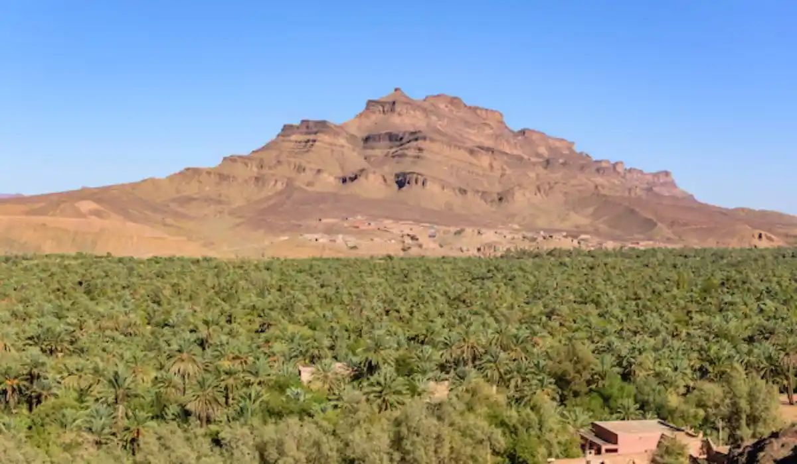

محامي ومكتب محاماة في تبوك لجميع القضايا. استشارة قانونية سريعة.

فريقنا يخدم كل مناطق وأحياء تبوك دون استثناء، بنفس سرعة الاستجابة ومعيار الخدمة.
يقدّم فريقنا في تبوك استشارة وتمثيلاً قانونيًا لعملاء الأفراد والشركات في منطقة تشهد تحولاً اقتصاديًا كبيرًا نظرًا لقربها من مشاريع البحر الأحمر الكبرى ونيوم، بخبرة عملية تواكب هذا النمو المتسارع.
تبوك مدينة شهدت في السنوات الأخيرة نموًا اقتصاديًا وعمرانيًا غير مسبوق نظرًا لقربها الجغرافي من مشروعي نيوم والبحر الأحمر، وهو ما جذب أعدادًا كبيرة من الشركات المقاولة والعمالة الوافدة والمستثمرين الباحثين عن فرص في هذه المنطقة الناشئة. هذا التحول السريع يخلق طبيعة قانونية مختلفة عن تبوك التقليدية، حيث تتزايد القضايا التجارية والعقارية والعمالية المرتبطة بمشاريع البنية التحتية الكبرى.
يبرز الطلب في تبوك على تأسيس الشركات للمقاولين والموردين الراغبين في دخول سلسلة التوريد الخاصة بمشاريع المنطقة الشمالية الغربية، إلى جانب التحكيم التجاري في العقود الكبرى المرتبطة بالإنشاءات والمقاولات. كما نتابع عددًا متزايدًا من قضايا العمل والعمال نظرًا لتدفق العمالة الوافدة للعمل في مواقع المشاريع، إلى جانب قانون العقارات والملكية المرتبط بالنمو السكني السريع في المدينة.
نظرًا للطبيعة الاستراتيجية للمنطقة، نتابع أيضًا ملفات مرتبطة بقطاع المشاريع العملاقة، من عقود المقاولين من الباطن إلى نزاعات التوريد الكبرى، إضافة إلى قطاع الخدمات اللوجستية المرتبط بحركة نقل المعدات والمواد لمواقع المشاريع.
تخضع قضايا تبوك للمحكمة التجارية للنزاعات المرتبطة بالمقاولات والتوريد، والمحكمة العمالية لقضايا العمل، والمحكمة العامة للأحوال الشخصية والقضايا المدنية، مع متابعة إلكترونية شاملة عبر منصة ناجز. نظرًا لضخامة بعض المشاريع في المنطقة، قد تتضمن بعض الملفات أطرافًا متعددة الجنسيات، وهو ما نتعامل معه بخبرة عملية متراكمة.
من الحالات المتكررة: مقاول من الباطن يطالب بمستحقات متأخرة من مقاول رئيسي في مشروع بنية تحتية كبير، أو شركة توريد محلية تحتاج لمراجعة عقد مع جهة مطورة قبل التوقيع لتفادي بنود غير متوازنة، أو عامل وافد يحتاج لفهم حقوقه بعد انتهاء عقد عمل مؤقت مرتبط بمرحلة إنشائية محددة. حالة أخرى متكررة: مستثمر عقاري يرغب في شراء أرض قريبة من مواقع المشاريع الكبرى، ويحتاج لتحقق قانوني دقيق من صحة الصك والوضع النظامي للأرض قبل إتمام الصفقة.
حالة إضافية شائعة في تبوك: شركة ناشئة محلية تحصل على عقد أول لها مع مقاول رئيسي في أحد المشاريع الكبرى، وتحتاج لمراجعة قانونية شاملة قبل التوقيع نظرًا لحداثة خبرتها في هذا النوع من التعاقدات. نساعد هذه الشركات على فهم كامل بنود المسؤولية والضمانات المطلوبة منها قبل الالتزام رسميًا بالعقد.
في قضايا العمل الفردية، غالبًا ما تكفي استشارة ومراجعة سريعة للعقد قبل التوجه للجهة العمالية المختصة. أما في النزاعات التجارية الكبرى المرتبطة بمشاريع البنية التحتية، فيكون التمثيل الكامل ضروريًا من البداية نظرًا للقيمة المالية الضخمة وتعدد الأطراف المعنية بهذا النوع من العقود.
علامات تستدعي التواصل الفوري: تأخر مستحقات مقاول من الباطن في مشروع كبير، وجود بند غامض في عقد توريد أو مقاولة قبل التوقيع، أو الرغبة في التحقق من صحة أرض قبل شرائها في منطقة تشهد نموًا عمرانيًا سريعًا. التحرك المبكر في بيئة تتغير بسرعة كهذه يحفظ حقوقك ويقلل من مخاطر الاستثمار.
يبدأ التواصل عبر رسالة واتساب موجزة، يليها تقييم سريع من محامٍ متخصص في القضايا التجارية أو العمالية حسب طبيعة حالتك، ثم خطة عمل واضحة المدة. نظرًا لحجم وسرعة التطورات في المنطقة، نحرص على متابعة مستجدات السوق المحلي باستمرار لتقديم استشارة مواكبة للواقع الفعلي.
في القضايا التجارية، يفيد تجهيز نسخة من عقد المقاولة أو التوريد والمراسلات ذات الصلة. في قضايا العمل، يساعد وجود نسخة من عقد العمل وخطاب إنهاء الخدمة إن وجد. لا حاجة لأي مستندات في مرحلة الاستشارة الأولى؛ نطلبها فقط عند الانتقال الفعلي لمرحلة المطالبة الرسمية.
في قضايا العمل الفردية، عادة ما نحصل على تقييم أولي خلال يوم إلى يومين. أما النزاعات التجارية الكبرى المرتبطة بمشاريع البنية التحتية فتعتمد مدتها على تعقيد العقد وعدد الأطراف، ونعطيك تقديرًا واقعيًا بعد المراجعة الأولية للملف، بدل وعود عامة قد لا تتحقق في بيئة سريعة التغير كهذه.
نظرًا لضخامة المشاريع في منطقة تبوك، كثير من الشركات العاملة فيها تدير مقارها الرئيسية من الرياض أو جدة. نضمن تنسيقًا موحّدًا بين فرقنا في هذه المدن لخدمة عملائنا الذين تمتد أعمالهم بين أكثر من موقع، بحيث يحصل العميل على استشارة متكاملة بصرف النظر عن مكان تسجيل شركته الرسمي. هذا التنسيق يوفر وقتًا كبيرًا على الشركات التي تحتاج لمتابعة ملف واحد يمتد بين عدة مدن دون تكرار شرح تفاصيل القضية لأكثر من فريق واحد في كل مرة، وهو ما يوفر الوقت والجهد على الجميع.
نتابع عن قرب التطورات الاقتصادية المتسارعة في منطقة تبوك، وهو ما يمنحنا فهمًا عمليًا محدّثًا لاحتياجات الشركات والأفراد العاملين في هذه البيئة الاستثمارية الناشئة، بدل تقديم استشارة عامة لا تواكب سرعة التغيير في المنطقة.
ندرك أن كثيرًا من الشركات الصغيرة والمتوسطة التي تدخل سلسلة التوريد في تبوك لأول مرة قد لا تملك خبرة سابقة بالتعامل مع عقود المقاولات الكبرى ومتطلباتها المعقدة. نلتزم بشرح هذه العقود بلغة واضحة، وتحديد المخاطر المحتملة قبل التوقيع، حتى لا تجد نفسك ملتزمًا ببنود لم تفهمها بشكل كامل. كما نلتزم بمتابعة التطورات التنظيمية في المنطقة أولاً بأول، نظرًا لسرعة التغيير التي تشهدها تبوك مقارنة بمعظم مدن المملكة الأخرى، وهو التزام نعتبره ضروريًا لتقديم استشارة دقيقة في بيئة استثمارية متغيرة باستمرار.
سؤال متكرر: هل من الآمن التعاقد مع مقاول رئيسي أجنبي لا يوجد له سجل تجاري طويل في السعودية؟ ننصح دائمًا بالتحقق من السجل التجاري والوضع النظامي للشركة قبل توقيع أي عقد توريد أو مقاولة من الباطن. سؤال آخر: هل تختلف إجراءات فسخ عقد عمل مؤقت مرتبط بمشروع كبير عن عقد العمل الاعتيادي؟ نعم، وهي نقطة نراجعها بعناية خاصة لأن كثيرًا من هذه العقود تتضمن بنودًا مرتبطة بمراحل إنجاز المشروع تحديدًا. سؤال ثالث شائع: هل يمكن الحصول على تقييم أولي سريع لعقد كبير قبل اجتماع مهم مع مستثمر أو مقاول رئيسي؟ نعم، نحاول قدر الإمكان تقديم توجيه سريع عبر الواتساب متى كانت طبيعة السؤال تسمح بذلك، مع تحويلك لمراجعة أكثر تفصيلاً وشاملة إن استدعى الأمر ذلك فعليًا، خصوصًا في العقود التي تتجاوز قيمتها مبالغ معينة تستدعي حذرًا إضافيًا ومراجعة قانونية أكثر تفصيلاً قبل أي التزام نهائي.
يغطي فريقنا في تبوك جميع الأحياء والمناطق دون استثناء، بما في ذلك المروج، الورود، والمصيف، بنفس سرعة الاستجابة ومعيار الخدمة بصرف النظر عن موقعك داخل المدينة.
نعم، نتابع بانتظام عقودًا ونزاعات تجارية مرتبطة بسلاسل التوريد والمقاولات من الباطن الخاصة بمشاريع المنطقة الشمالية الغربية، بمعرفة عملية بخصوصية هذه العقود.
نعم، نساعد الشركات الجديدة في فهم متطلبات التعاقد مع المقاولين الرئيسيين وتفادي المخاطر التعاقدية الشائعة في هذا النوع من المشاريع.
نعم، نتابع بانتظام قضايا حقوق العمال المرتبطة بعقود مؤقتة تنتهي بانتهاء مرحلة إنشائية معينة، مع فهم دقيق لبنود هذه العقود.
نعم، نقدّم خدمة تحقق قانوني من صكوك الملكية والوضع النظامي للأراضي قبل إتمام أي صفقة شراء في هذه المنطقة سريعة النمو.
نعم، تختلف حسب حجم النزاع وتعقيد العقد، ونوضح ذلك بشفافية كاملة بعد تقييم حالتك في الاستشارة الأولية المجانية.
نعم، نساعد في مراجعة وتفسير العقود المترجمة للتأكد من مطابقتها للنظام السعودي قبل التوقيع النهائي عليها.
نعم، فرقنا في هذه المدن تعمل بتنسيق كامل، ويمكنك بدء الاستشارة من أي مدينة تقيم فيها.
نعم، نساعد الشركات المحلية في حماية التصاميم والأفكار المرتبطة بمشاريعها قبل عرضها على جهات تعاقدية كبرى.
تواصل مع محامٍ مرخّص خلال دقائق عبر الواتساب — في أي مدينة بالمملكة.
ابدأ الاستشارة الآن